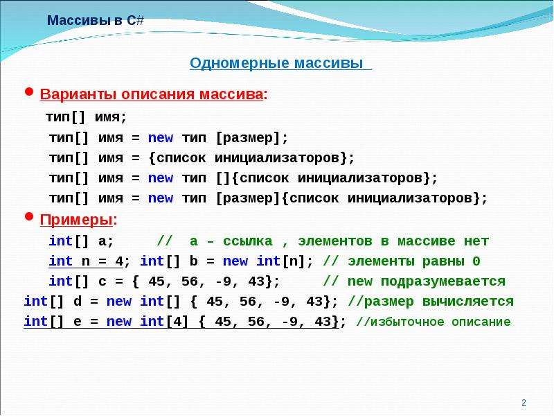
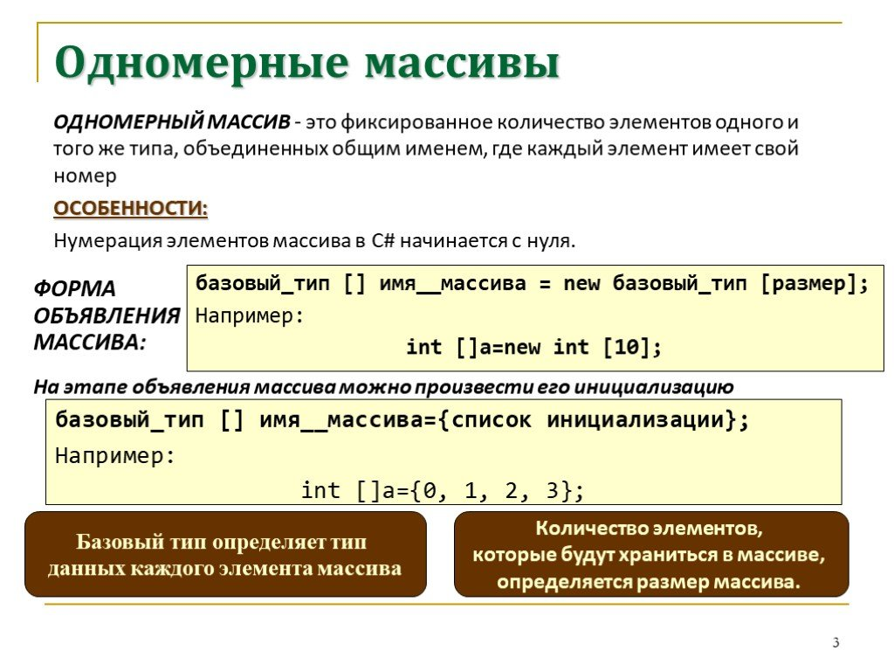

Массивы в C# являются ссылочным типом данных. Это означает, что их значения хранятся в куче, а имя переменной массива является ссылкой на соответствующую область памяти.
Массив представляет набор однотипных данных. Объявление массива похоже на объявление переменной за тем исключением, что после указания типа ставятся квадратные скобки:
тип_переменной[] название_массива;
Например, определим массив целых чисел:
int[] numbers;
После определения переменной массива мы можем присвоить ей
определенное значение:
int[] nums = new int[4];
Здесь вначале мы объявили массив nums, который будет хранить данные типа int. Далее используя операцию new, мы выделили память для 4 элементов массива: new int[4]. Число 4 еще называется длиной массива. При таком определении все элементы получают значение по умолчанию, которое предусмотренно для их типа. Для типа int значение по умолчанию - 0.
Также мы сразу можем указать значения для этих элементов:
int[] nums2 = new int[4] { 1, 2, 3, 5 };
int[] nums3 = new int[] { 1, 2, 3, 5 };
int[] nums4 = new[] { 1, 2, 3, 5 };
int[] nums5 = { 1, 2, 3, 5 };
Все перечисленные выше способы будут равноценны.
Подобным образом можно определять массивы и других типов, например, массив значений типа string:
string[] people = { "Tom", "Sam", "Bob" };
Индексы и получение элементов массива
Для обращения к элементам массива используются индексы. Индекс представляет номер элемента в массиве, при этом нумерация начинается с нуля, поэтому индекс первого элемента будет равен 0, индекс четвертого элемента - 3.
Используя индексы, мы можем получить элементы массива:
int[] numbers = { 1, 2, 3, 5 };
// получение элемента массива
Console.WriteLine(numbers[3]); // 5
// получение элемента массива в переменную
var n = numbers[1]; // 2
Console.WriteLine(n); // 2
Также мы можем изменить элемент массива по индексу:
int[] numbers = { 1, 2, 3, 5 };
// изменим второй элемент массива
numbers[1] = 505;
Console.WriteLine(numbers[1]); // 505
И так как у нас массив определен только для 4 элементов, то мы
не можем обратиться, например, к шестому элементу. Если мы так
попытаемся сделать, то мы получим ошибку во время выполнения:
int[] numbers = { 1, 2, 3, 5 };
Console.WriteLine(numbers[6]); // ! Ошибка - в массиве только 4
элемента
Свойство Length и длина массива
каждый массив имеет свойство Length, которое хранит длину
массива. Например, получим длину выше созданного массива
numbers:
int[] numbers = { 1, 2, 3, 5 };
Console.WriteLine(numbers.Length); // 4
Для получения длины массива после названия массива через точку
указывается свойство Length: numbers.Length.
Получение элементов с конца массива
Благодаря наличию свойства Length, мы можем вычислить индекс
последнего элемента массива - это длина массива - 1. Например,
если длина массива - 4 (то есть массив имеет 4 элемента), то
индекс последнего элемента будет равен 3. И, используя свойство
Length, мы можем легко получить элементы с конца массива:
int[] numbers = { 1, 2, 3, 5};
Console.WriteLine(numbers[numbers.Length - 1]); // 5 - первый с
конца или последний элемент
Console.WriteLine(numbers[numbers.Length - 2]); // 3 - второй с
конца или предпоследний элемент
Console.WriteLine(numbers[numbers.Length - 3]); // 2 - третий
элемент с конца
Однако при подобном подходе выражения типа numbers.Length - 1,
смысл которых состоит в том, чтобы получить какой-то
определенный элемент с конца массива, утяжеляют код. И, начиная,
с версии C# 8.0 в язык был добавлен специальный оператор ^, с
помощью которого можно задать индекс относительно конца
коллекции.
Перепишем предыдущий пример, применяя оператор ^:
int[] numbers = { 1, 2, 3, 5};
Console.WriteLine(numbers[^1]); // 5 - первый с конца или
последний элемент
Console.WriteLine(numbers[^2]); // 3 - второй с конца или
предпоследний элемент
Console.WriteLine(numbers[^3]); // 2 - третий элемент с конца
Перебор массивов
Для перебора массивов мы можем использовать различные типы
циклов. Например, цикл foreach:
int[] numbers = { 1, 2, 3, 4, 5 };
foreach (int i in numbers)
{
Console.WriteLine(i);
}
Здесь в качестве контейнера выступает массив данных типа int. Поэтому мы объявляем переменную с типом int
Подобные действия мы можем сделать и с помощью цикл for:
int[] numbers = { 1, 2, 3, 4, 5 };
for (int i = 0; i < numbers.Length; i++)
{
Console.WriteLine(numbers[i]);
}
В то же время цикл for более гибкий по сравнению с foreach. Если
foreach последовательно извлекает элементы контейнера и только
для чтения, то в цикле for мы можем перескакивать на несколько
элементов вперед в зависимости от приращения счетчика, а также
можем изменять элементы:
int[] numbers = { 1, 2, 3, 4, 5 };
for (int i = 0; i < numbers.Length; i++)
{
numbers[i] = numbers[i] * 2;
Console.WriteLine(numbers[i]);
}
Также можно использовать и другие виды циклов, например, while:
int[] numbers = { 1, 2, 3, 4, 5 };
int i = 0;
while(i < numbers.Length)
{
Console.WriteLine(numbers[i]);
i++;
}
Многомерные массивы
Массивы характеризуются таким понятием как ранг или количество измерений. Выше мы рассматривали массивы, которые имеют одно измерение (то есть их ранг равен 1) - такие массивы можно представлять в виде ряда (строки или столбца) элемента. Но массивы также бывают многомерными. У таких массивов количество измерений (то есть ранг) больше 1.
Массивы которые имеют два измерения (ранг равен 2) называют двухмерными. Например, создадим одномерный и двухмерный массивы, которые имеют одинаковые элементы:
int[] nums1 = new int[] { 0, 1, 2, 3, 4, 5 };
int[,] nums2 = { { 0, 1, 2 }, { 3, 4, 5 } };
Визуально оба массива можно представить следующим образом:

Поскольку массив nums2 двухмерный, он представляет собой простую таблицу. Все возможные способы определения двухмерных массивов:
int[,] nums1;
int[,] nums2 = new int[2, 3];
int[,] nums3 = new int[2, 3] { { 0, 1, 2 }, { 3, 4, 5 } };
int[,] nums4 = new int[,] { { 0, 1, 2 }, { 3, 4, 5 } };
int[,] nums5 = new [,]{ { 0, 1, 2 }, { 3, 4, 5 } };
int[,] nums6 = { { 0, 1, 2 }, { 3, 4, 5 } };
Массивы могут иметь и большее количество измерений. Объявление
трехмерного массива могло бы выглядеть так:
int[,,] nums3 = new int[2, 3, 4];
Соответственно могут быть и четырехмерные массивы и массивы с большим количеством измерений. Но на практике обычно используются одномерные и двухмерные массивы.
Определенную сложность может представлять перебор многомерного массива. Прежде всего надо учитывать, что длина такого массива - это совокупное количество элементов.
int[,] numbers = { { 1, 2, 3 }, { 4, 5, 6 }};
foreach (int i in numbers)
Console.Write($"{i} ");
В данном случае длина массива numbers равна 6. И цикл foreach
выводит все элементы массива в строку:
1 2 3 4 5 6
Но что если мы хотим отдельно пробежаться по каждой строке в
таблице? В этом случае надо получить количество элементов в
размерности. В частности, у каждого массива есть метод
GetUpperBound(номер_размерности), который возвращает индекс
последнего элемента в определенной размерности. И если мы
говорим непосредственно о двухмерном массиве, то первая
размерность (с индексом 0) по сути это и есть таблица. И с
помощью выражения
numbers.GetUpperBound(0) + 1
можно получить количество строк таблицы, представленной
двухмерным массивом. А через
numbers.Length / количество_строк
можно получить количество элементов в каждой строке:
int[,] numbers = { { 1, 2, 3 }, { 4, 5, 6 }};
int rows = numbers.GetUpperBound(0) + 1; // количество строк
int columns = numbers.Length / rows; // количество столбцов
// или так
// int columns = numbers.GetUpperBound(1) + 1;
for (int i = 0; i < rows; i++)
{
for (int j = 0; j < columns; j++)
{
Console.Write($"{numbers[i, j]} \t");
}
Console.WriteLine();
}
1 2 3
4 5 6
Массив массивов
От многомерных массивов надо отличать массив массивов или так
называемый "зубчатый массив":
int[][] nums = new int[3][];
nums[0] = new int[2] { 1, 2 }; // выделяем память для первого
подмассива
nums[1] = new int[3] { 1, 2, 3 }; // выделяем память для второго
подмассива
nums[2] = new int[5] { 1, 2, 3, 4, 5 }; // выделяем память для
третьего подмассива
Здесь две группы квадратных скобок указывают, что это массив
массивов, то есть такой массив, который в свою очередь содержит
в себе другие массивы. Причем длина массива указывается только в
первых квадратных скобках, все последующие квадратные скобки
должны быть пусты: new int[3][]. В данном случае у нас массив
nums содержит три массива. Причем размерность каждого из этих
массивов может не совпадать.
Альтернативное определение массива массивов:
int[][] numbers = {
new int[] { 1, 2 },
new int[] { 1, 2, 3 },
new int[] { 1, 2, 3, 4, 5 }
};
Зубчатый массив nums

Используя вложенные циклы, можно перебирать зубчатые массивы. Например:
int[][] numbers = new int[3][];
numbers[0] = new int[] { 1, 2 };
numbers[1] = new int[] { 1, 2, 3 };
numbers[2] = new int[] { 1, 2, 3, 4, 5 };
foreach(int[] row in numbers)
{
foreach(int number in row)
{
Console.Write($"{number} \t");
}
Console.WriteLine();
}
// перебор с помощью цикла for
for (int i = 0; i<numbers.Length;i++)
{
for (int j =0; j<numbers[i].Length; j++)
{
Console.Write($"{numbers[i][j]} \t");
}
Console.WriteLine();
}
Основные понятия массивов
Суммируем основные понятия массивов:
- Ранг (rank): количество измерений массива
- Длина измерения (dimension length): длина отдельного измерения массива
- Длина массива (array length): количество всех элементов массива
Например, возьмем массив
int[,] numbers = new int[3, 4];
Массив numbers двухмерный, то есть он имеет два измерения,
поэтому его ранг равен 2. Длина первого измерения - 3, длина
второго измерения - 4. Длина массива (то есть общее количество
элементов) - 12.